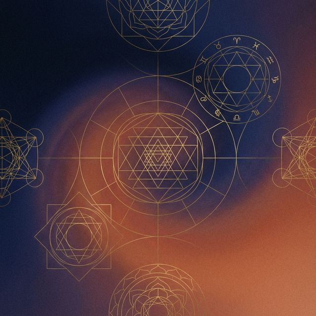

Från Öde till Eget Val
Integrerat Själsarbete - Kartläggning av ditt Karma genom Vedisk Astrologi och Medial Vägledning
"Du är här i denna jordiska dimension för att din själ genom tidigare handlingar helt enkelt önskar en känslomässig upplevelse"
Når du vägs ände?
Sitter du fast i mönster som verkar upprepa sig i ditt liv, oavsett hur mycket du kämpar? Ibland är kartan vi bär på ritad av krafter vi inte ser – karma, arv och tidigare val.
Genom Integrerat Själsarbete hjälper jag dig att tyda mönstren och återta din egen fria vilja.

Mina Tjänster
Medial Vägledning
800:- / 1 tim
- Nulägesanalys: Var är du i livet just nu?
- Andligt Beskydd: Vem vakar över dig?
- Kommande Fokus: Var ska du lägga din kraft på närtid?
- Livets Vändpunkter: Hitta klarhet i både med- och motgång.
- Själslig Identitet: Vem är du bakom alla roller?
Vedisk Astro Profilering
1500:- / 2 tim
- Din Ödeslykta: Kartläggning av karma och livsväg.
- Tidigare Liv: Se mönstren bakåt genom stjärnorna.
- Karriär, Hälsa & Framtid: Insikter om din nuvarande situation och väg framåt.
Samtal & Vägledning
700:- / 1 tim
- 12 steg: Vägen mot tillfrisknande.
- Beroende & Medberoende: Bryt dysfunktionella mönster.
- Addiktologisk behandling: Stöd i din förändringsprocess.
- Ungdoms- & Föräldrastöd: Hjälp för unga som behöver stöd att bryta isolering och hitta sin väg.
Att lyssna inåt – att tyda själens viskningar genom de andliga dimensionerna.
Vedans öga – en antik visdom som ger oss ljus att se vår livsväg genom tiderna.
Från mörker till ljus – att navigera beroendets och barndomens skuggor mot helhet.
Är ni en grupp eller ett företag? Jag erbjuder även Gruppseanser & Företagsevent med reinkarnationshistorier. Kontakta för pris.
Ett Perspektiv bortom Tiden
Min resa som själ sträcker sig över 700 år och sju inkarnationer – en vandring från att styra som 1300-talets Drottning Margareta till dagens roll som din guide. Denna djupa 'andliga spänst' har jag finslipat genom yoga och försakelse.
Tsar Nicholas II
Själen som en gång var tsaren lever i dag ett enkelt liv i Sörmland. På grund av tidigare val och karma är han nu beroende av andra.
Läs hela berättelsen →Drottning Margareta
Från Nordens mäktigaste kvinna på 1300-talet till dagens andliga vägledare. En resa över sex livstider från makt till andlig fördjupning.
Läs hela berättelsen →Annika & Chrisannika
En själ som efter ett svårt liv återföddes som en skygg honkatt i Gnesta. Själen dör aldrig, den byter bara form.
Läs hela berättelsen →Om Anette Kishori
Anette Kishori visste tidigt vilken som var hennes livsväg. Redan vid fjorton års ålder vaknade hennes karma-kall att vandra Bhakti-vägen. Mantrat Hare Krishna Hare Rama visade vägen till en upplyst stig kantad av andliga lärare i Indien, Norge, Tyskland och Sverige. Hon har lyssnat och lärt av mästare som bemästrat sin egen natur och sina begär.
Sedan 1980 har hennes mediala förmåga finslipats genom studier i Vedisk Astrologi. Till detta har lagts erfarenhet som biträdande addiktologisk behandlare, där 12-stegsprogrammet används för att bryta dysfunktionella mönster.
Dessa kraftfulla verktyg hjälper henne att lyssna in din unika frekvens för att ge dig medial vägledning med sanningen och klarhetens lykta i hand.
Boka ditt samtal
För profilering i Vedisk Astrologi, vänligen inkludera födelsedatum, tid och plats.
Möten sker i Gnesta eller bekvämt via Zoom.